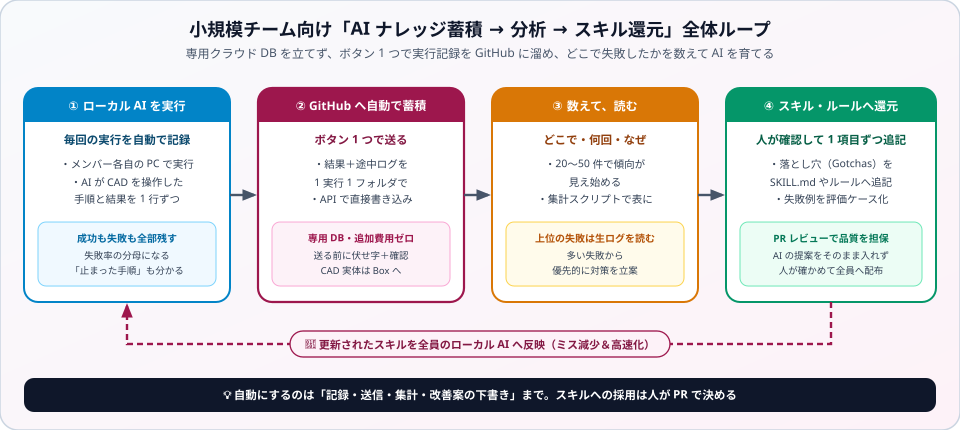
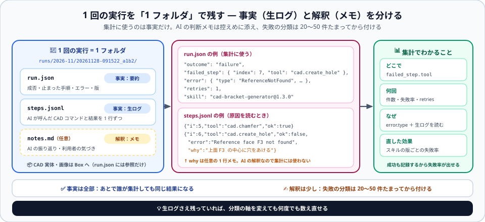
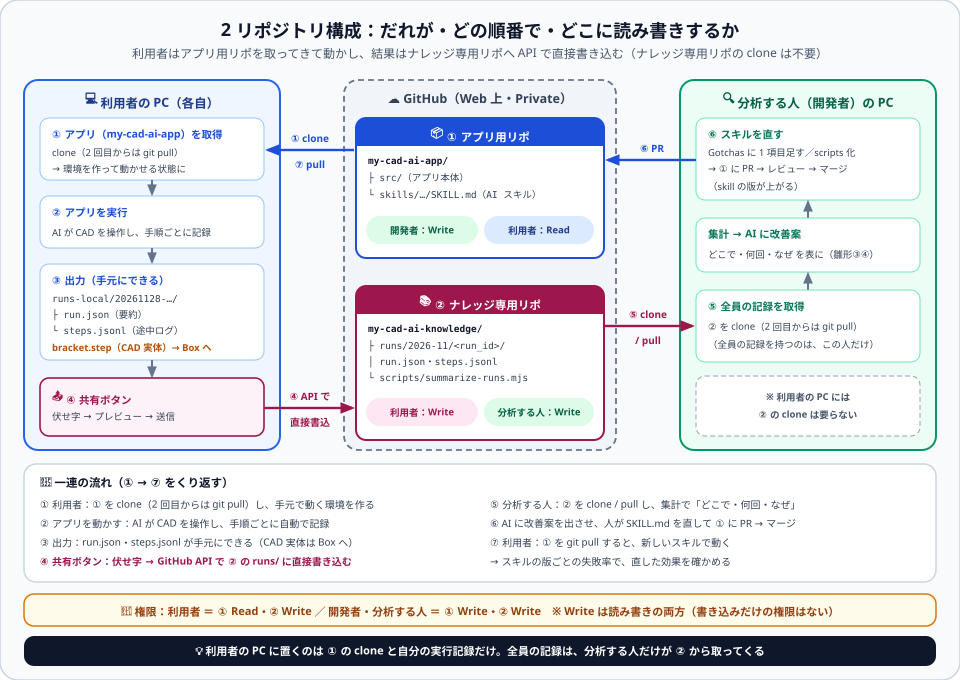

ナレッジシェア（Knowledge Share）わかる動的ガイド
2〜3 人の立ち上げ初期プロジェクトで、ローカル AI アプリ（例：CAD 操作 AI）の結果と途中経過のログを、共有ボタン 1 つで GitHub に溜めていき、どこで・何回・なぜ失敗しているかを数えて AI のスキル・ルールを直すための実践ガイドです。5 つのステップで、仕組みの組み方を体験できます。
① ボタン 1 つで溜まる
結果も途中ログも GitHub へ自動保存
② 生ログが主役
事実は全部、AI の解釈は少しだけ
③ 20〜50 件で数える
どこで・何回・なぜ失敗したかを表に
④ 人が 1 項目ずつ直す
改善案は AI、採用は人が PR で

専用クラウド DB の前に選べる「5 つの蓄積方法」を比べる
まずは軽く始めて、増えたら移せばよい：
世の中には、データを Git リポジトリへ自動コミットし続ける Git scraping（Simon Willison） や、GitHub Issues／Discussions を保存先にする Utterances／Giscus のように、専用 DB なしで GitHub を活かす実績ある工夫があります。下の 5 案をクリックして見比べてみましょう。おすすめは「② リポジトリへ自動保存」です。
💡 STEP 1 の要点
2〜3 人の立ち上げ初期は「② リポジトリへ自動保存（ボタン → API で直接書き込み）」から始め、CAD などの大きな実体ファイルだけ「④ Box 等の共有フォルダ」へ外置きする組み合わせが軽くて安全です。トークンを渡せない人が加わったら「① Issue」の経路を足します。
1 回の実行を「1 フォルダ」で残し、ボタン 1 つで GitHub へ送る
事実は全部、解釈は少し：
アプリは毎回の実行を自動で記録します。
run.json（成否・止まった手順・エラー・版）と steps.jsonl（AI が呼んだ CAD コマンドと結果を 1 行ずつ）が事実、notes.md や why（AI の一言メモ）は解釈です。集計には事実だけを使い、「単位ミス」のような分類は 20〜50 件たまってから付けます。

送り方の安全ルール：
ブラウザ側の HTML／JS に GitHub のトークンを書いてはいけません。基本は「経路 A：アプリが API で直接書き込む（clone 不要）」。トークンを用意しない人には「経路 B：Issue 画面（＋経路 C で runs/ に保存）」、書き込み権限を配りたくないときは「経路 D：dispatch → Actions」を使います。切り替えて動きを見てみましょう。
🛠️ 今回の AI 実行結果
送信前プレビュー⚙️ 経路 A の動き（アプリが API で直接書き込む）
各自のトークン（② の Write）// 待機中：左の「📤 GitHub へ共有」ボタンを押してください（※本ガイド内は解説用シミュレーション）
{ "ここに送られる run.json の中身が表示されます" }
💡 STEP 2 の要点
基本は経路 A（API で直接書き込み）です。途中ログまで全部送れて、利用者の PC にナレッジ専用リポを clone する必要も、Actions もありません。1 実行 1 フォルダなので、同時に押しても他の人の記録は消えません。経路 B の Issue は URL に載る要約だけ、経路 D の dispatch は64 KB 未満・最上位 10 項目までで、中継側に
Contents: write のトークンが要ります。
1 リポジトリ（同居）か、2 リポジトリ（分離）か？ かんたん診断
権限と履歴のキレイさで選ぶ：
アプリ本体と同じリポジトリに置く「1 リポ」は管理が 1 か所で手軽ですが、ファイルで自動保存すると開発の履歴に混ざり、送る人にアプリのコードの書き込み権限が要ります。下の 4 つの条件を切り替えて、今の状況に合う構成と理由を確かめてみましょう。

1 リポ構成で同じ流れを行う場合と、その注意点は ks-09（1 リポの流れ） を見てください。

Q1. ナレッジをどうやって蓄積する予定ですか？
Q2. 共有機能を使うのは誰ですか？
Q3. どの範囲の AI ナレッジを蓄積しますか？
Q4. 立ち上げ時点で、どちらをより重視しますか？
💡 STEP 3 の要点
迷ったら「ファイルで自動保存するなら 2 リポ。Issue だけ・開発メンバーだけなら 1 リポでも可」です。2 リポにするときは、
run.json に app_version（アプリの版）と skill（スキルの版）を必ず入れておくと、どの版で失敗したか、直した後に失敗率が下がったかを追えます。
数えて直す 4 ステップ ＆ 自動保存を壊さない 4 つの工夫
「貯めっぱなし」も「AI に丸投げ」も効かない：
20〜50 件たまったら、「どこで・何回・なぜ」を数え、上位の失敗の生ログを読み、人が 1 項目ずつスキルに足す。これを週 1 回 30 分（目安）くり返します。AI に任せるのは「数える・まとめる・改善案の下書き」までです。
🛡️ 自動保存を壊さない「4 つの工夫」
① 1 実行 1 フォルダ（衝突しない）
フォルダ名を「日時＋ランダム 4 文字」にすれば、2 人が同時に押しても同じファイルには触りません。先に誰かが書き込んでいたら、最新の状態から作り直して送り直すだけで通ります。
② 送る前に伏せ字＋プレビュー
依頼文も途中ログも残すぶん、顧客名・図番などの伏せ字リストと API キーらしき文字列を自動で置き換え、送る内容を画面で見せます。送り先は Private のナレッジ専用リポだけにします。
③ テキストだけ送る（CAD 実体は Box へ）
GitHub は 50 MiB で警告・100 MiB で拒否、リポジトリは 1 GB 未満が理想です。CAD 実体や画像は Box などに置き、run.json には保存先とハッシュ値だけを書きます。
④ Actions を使うなら queue: max
経路 C・D で Actions を使うとき、既定（queue: single）のままだと待っている実行が置き換えられて消えます。queue: max なら最大 100 件まで待てます。
💡 STEP 4 の要点
週 1 回 30 分（目安）、集計表で上位の失敗を見つけ、生ログを読んでスキルの「落とし穴（Gotchas）」に 1 行足す。直した後はスキルの版ごとの失敗率で効果を確かめる。これだけで、チーム全体の AI が着実に育ちます。
コピペで使える 6 種の雛形
最初に要るのは ①〜④ だけ：
「② 記録＆共有モジュール」をアプリに入れれば、ボタン 1 つで
runs/ に溜まり始めます。20 件くらいたまったら「③ 集計スクリプト」で表にし、「④ 分析プロンプト」で AI に改善案を出させます。⑤⑥ は、トークンを用意しない人が加わってから足します。
▶ 次は STEP 6
ここまでの仕組みで回り始めたら、記録が増えたときに DB やクラウドへどう育てるかを STEP 6 で見てみましょう。
GitHub から DB・クラウドへ：段階を切り替えて見る
記録の形は変えず、「受け口」と「置き場」だけを変える：
いまの GitHub の形（段階 1）から、集計用 DB（段階 2）、社内 API ＋ DB（段階 3）、クラウド（段階 4）へ。図はどれも「左＝利用者／中央＝保存先／右＝分析する人」の同じ配置なので、切り替えるとオレンジの「変更」が付いたところだけが変わっているのがわかります。
🗺️ 4 段階のロードマップ
4 段階を 1 枚で見比べるなら ks-10（ロードマップ）、DB の表の例や送り先の差し替え方は 04. この先の発展 にまとめています。段階は飛ばしてもかまいません。困りごとが出たら 1 段ずつ進むのがおすすめです。

🎉 おつかれさまでした！
詳しい解説は knowledge-share/README.md、出典は sources.md にまとめています。スキルの評価ループや大容量 CAD の目録管理は 6. スキルガイド もあわせてご活用ください。